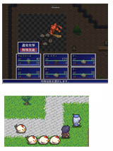
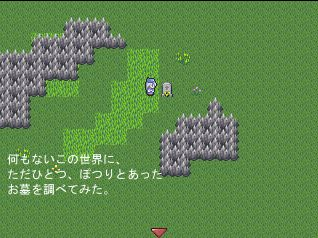

基本システムVer3のデータは、サンプルゲームに入ってる分で説明すると、
・ユーザデータベース
・可変データベース
・コモンイベント
(※コモン213番の「ゲームオーバーイベント」も最初は残しておいたほうがいいでしょう)
の3つの部分が、「基本システム」にあたります。
それ以外の「マップ」や「イベント」は、基本システムには含まれないので、
消してしまっても基本システムに影響を与えません。
【目標】
ウディタに搭載されている「基本システム」というものは、一体何なのか？
ゲーム内で一体どんな役割を持っているのか？ ここではそれを学びます。
| 【1】 基本システムで何ができるの？ まず、基本システムを使うことで ゲーム作者にとって何ができるのか、 以下に整理してみます。 ・主人公キャラの名前や能力値を設定できる ・パーティーを組める（最大6人） ・技能（※いわゆる魔法・じゅもん）を設定できる ・アイテムを設定できる ・お金という概念がある ・敵キャラを設定できる ・キャンセルキーでメニューを呼び出せる ・フロントビュー戦闘を発生させることができる ・お店イベントを発生させることができる ・「文章の表示」をすると自動的に メッセージウィンドウ画像を表示する ・セーブ・ロード画面を表示する ただし、以下の項目は基本システムに含まれておらず、 「イベント」として作られています。 ・タイトル画面を表示する ・タイトル画面で「スタート・コンティニュー」を選ぶ |
 |
| 【2】 どの部分のデータが基本システムなの？ 基本システムVer3のデータは、サンプルゲームに入ってる分で説明すると、 ・ユーザデータベース ・可変データベース ・コモンイベント (※コモン213番の「ゲームオーバーイベント」も最初は残しておいたほうがいいでしょう) の3つの部分が、「基本システム」にあたります。 それ以外の「マップ」や「イベント」は、基本システムには含まれないので、 消してしまっても基本システムに影響を与えません。 |
| 【3】 基本システムをなくすとどうなるの？ 基本システムが入っていない「完全初期データ」で ゲームを作ろうとすると、以下のようなゲームになります。 ・「文章を表示」してもメッセージウィンドウ画像が出ない ・キャンセルキーを押してもメニューが出ない ・戦闘を起こすコモンイベントもない ・お店を呼び出すコモンイベントもない ・お金やアイテムを増やすコモンイベントもない ・そもそもゲーム作者が主人公の名前や能力値を入れる場所がない つまり、やれることと言えば、 「ただマップを歩いて、決定キーでイベントを実行する」 だけのゲームになるのです。基本システムがなかった頃の ウディタは、この状態から作り始める必要があったんですよ。 最終的には完全自作システムもいいのですけれど、技術的に あなたがパーフェクトガイド要らずになるまでの間は、 ぜひ基本システムをご利用になることをおすすめします。 |
 |
＜執筆者：SmokingWOLF＞